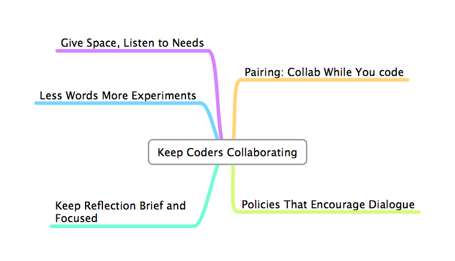

What Could You Do With 10 Years Of Continuous Improvement?
Who Am I?
- I've spent 12 Years working on the development team at Biomni
- Our product Front Office is an "IT Services Interface"
- I've been blogging about my experiences for 5 years at "Diary of a Scrummaster"

Where Did We Start?
- "Just go and build it"
- Worked alone
- Each dev assigned features, took weeks to months
- Worked from documents
- Shallow code reviews
- Long Test Periods, QA dept at opposite end of office
Lateness, Boredom, Frustration, Shrinking team
2003-2007: The Beginning
- Team Lead leaves - less Command and Control
- Starting to collaborate, but coding alone
- More conscious of importance of quality
- Continuous Integration
- Unit testing - well we tried
Lateness, Learning, Frustration, Shrinking team
2008-2011: Scrum
- Autonomy! Self actualisation
- limiting WIP with a 3 week sprint
- Collaboration within the team - Daily standup, increasing amounts of pairing
- Reflection - Regular retrospectives and standups
- Predictable - Delivered on time
- Problems: testing overrun, buglog, limited creativity?
Deliver within 4 weeks, Learning, Self Actualisation, What Next?
2011- Using Kanban to Improve
- Abandoned fixed length sprint
- Set Coding WIP at 10 where it has roughly stayed - frequently hit
- Measured lead time - particularly around defects
- Focus on keeping work flowing
- Dropped estimation unless asked for
- QA & Devs work more closely
- Allowed changes to backlog at any time
- More collaboration outside team
Deliver within 2 weeks, Learning, Creativity, Wider Collaboration, less Us and Them
Many Developers Just Want To Code
But...
Effectiveness Requires Collaboration
Here's What Worked For Us
Some People Wanted To Move To Their Country Residence

Here's What Worked For Us

So What did I learn?
I Noticed Most Improvement Came From Learning Faster Through
Anti-Matter Principle
Attend to Folks' Needs
Bob Marshall (@flowchansensei)